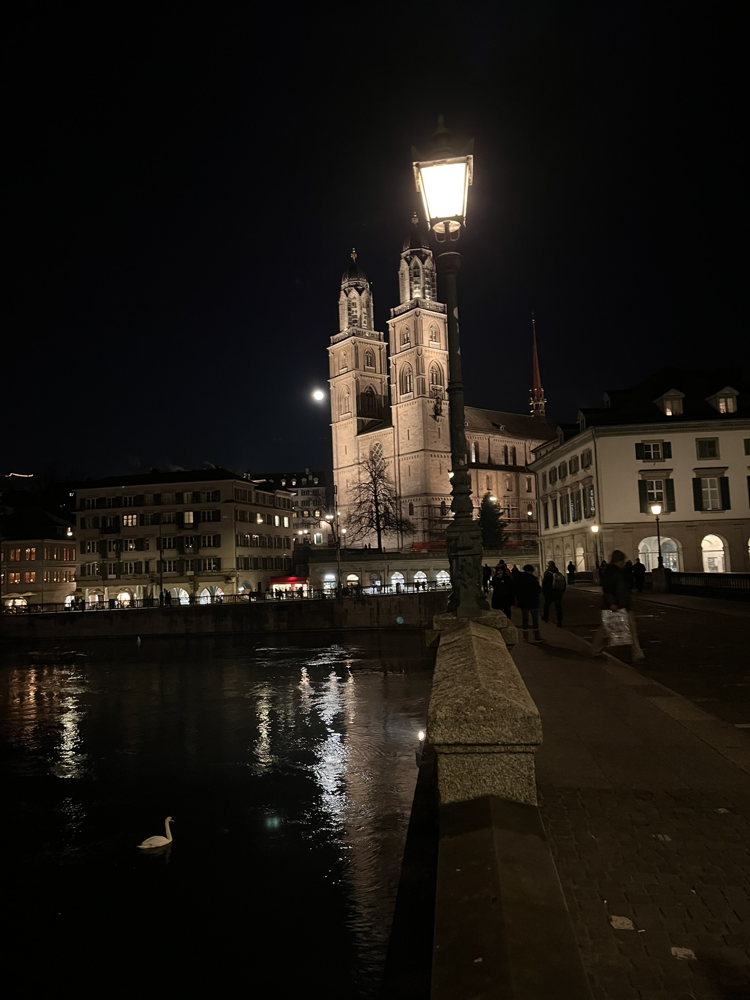
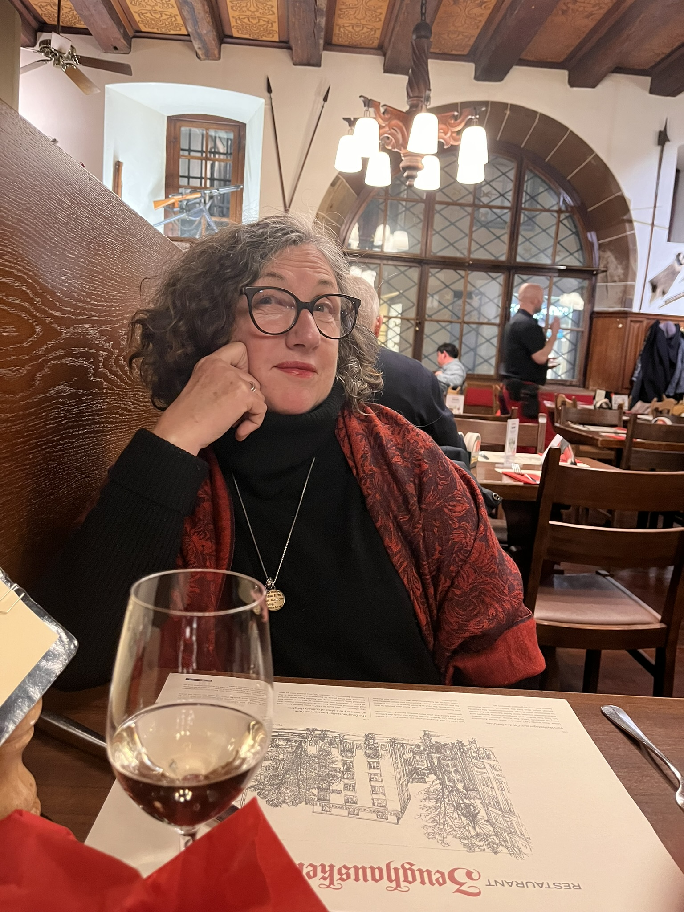
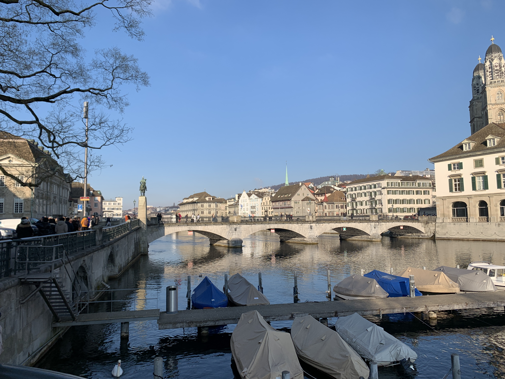
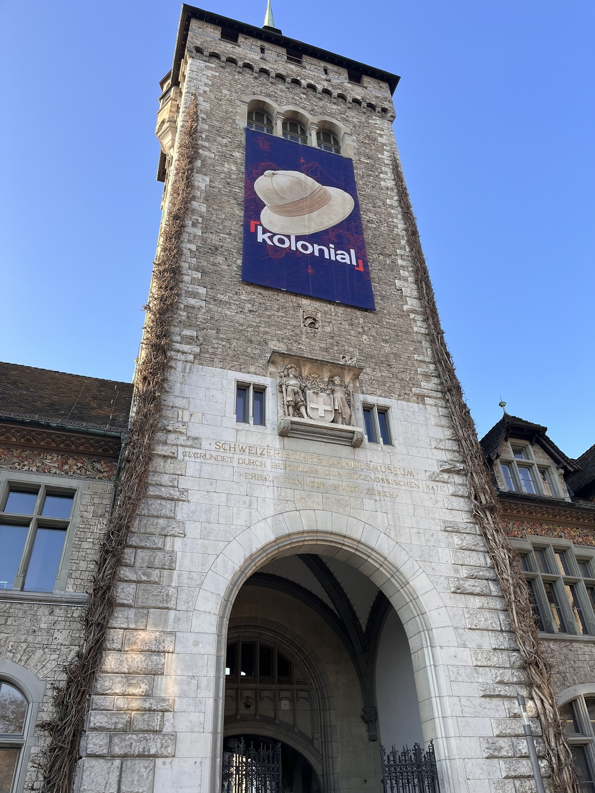
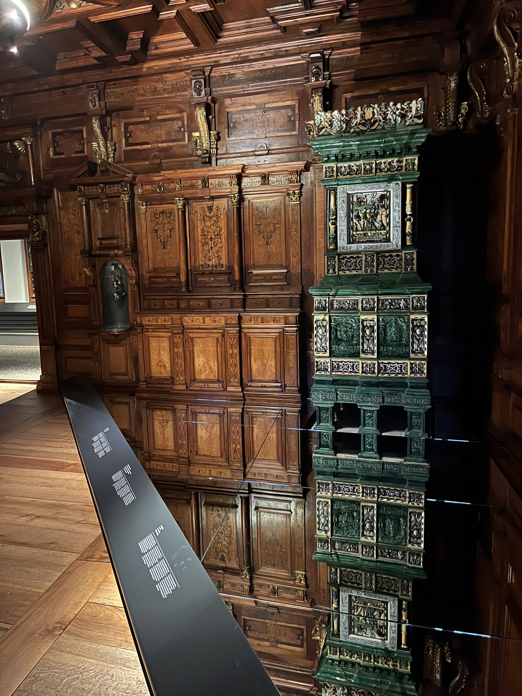

They told us Switzerland would be expensive, efficient and beautiful. Two out of three turned out to be understatements. The third — the cost — was manageable once we stopped fighting it and just leaned in. Zürich is not a city that apologises for itself, and honestly, why should it?
We landed at Zürich Airport at 8am and the first order of business was finding somewhere warm to change clothes. It was 1°C outside. Switzerland doesn't ease you in gently.
There was a brief comedy of errors involving a bus to the wrong terminal and some optimistic guesswork about which train platform to use, but we eventually sorted ourselves out and — using our Eurail Pass for the first time — arrived at our accommodation, The Altstadt Hotel, around midday. Thankfully our room was ready and the concierge let us check in early. Small victory, big relief.
Switzerland is not part of the European Union, which means their power points are different from everyone else's. There was no USB adapter anywhere in the room — we had to borrow one from the front desk. The staff were entirely unsurprised. If you're staying for any length of time, buy a Swiss adapter before you arrive.


Once that was sorted we wandered the old town — the Altstadt — and found lunch at a nice little bakery. Soup, bread and coffee for 24 CHF. Not too bad for one of the most expensive cities on earth.
With the cost of everything in mind we continued wandering and, on this clear and very cold afternoon, bought a few groceries for breakfast and a bottle of relatively inexpensive whisky — from Aldi. You find ways.
After that exertion we rested until dinner at the old established Swiss restaurant Zeughauskeller. It had exactly the clichéd mediaeval-hall ambience you'd expect — vaulted ceilings, long wooden tables, waitstaff who have seen everything — and the schnitzel wasn't bad. But it wasn't worth 100 CHF ($170 AUD). The beer, however, was excellent.

After Aldi Bircher Muesli for breakfast — a decision we stand by — we headed to the Kunsthaus Art Museum. It turned out to be one of the most rewarding mornings of the entire trip.
The collection spans old masters and contemporary work, but what stopped us cold was the Emil Bührle collection. Bührle was a Swiss arms manufacturer whose wealth was built partly on selling weapons to both the Nazis and the Allies, and a significant portion of his art collection was acquired from Jewish families who were forced to sell to fund their escape from Nazi persecution. The Kunsthaus made the decision to show the collection alongside the full context of its provenance — with surveys you could fill in along the way, contributing to the ongoing conversation about whether it should be shown at all. Confronting, necessary, and exactly the kind of thing a good museum should be doing.

By way of thanking the staff at The Altstadt Hotel for the adapter loan, we had lunch there. Two cheese and tomato toasties: 19 CHF ($33 AUD). Yes, $33 Australian dollars. For toasties. We tipped anyway.
Fuelled by our expensive snack we headed to the Swiss National Museum, housed in a castle-like building that turns out to be the perfect container for what's inside. There's a huge amount of content — the history of Switzerland, its political system, its geology — and some extraordinary intact grand rooms from a noble family's house, carved entirely from wood. Whether they used a Swiss army knife, we couldn't confirm.


There was also a significant exhibition about Swiss colonialism — a reminder that political neutrality and economic exploitation are not mutually exclusive. The Swiss were in Africa and Asia like everyone else. Hello, Nestlé.
"Switzerland doesn't try to sell itself to you. It just exists, magnificently, and waits for you to notice."
For dinner we walked to Europaallee, a newer, hipper precinct with a variety of options — Asian, Italian, traditional Swiss. We opted for dumplings, rice and soup to share.
In Switzerland — or anywhere, really — you know a place is good value when it's full of students. Europaallee was packed with them. Follow the students.
Zürich: the verdict
Two days in Zürich left us with a clear picture of the city: genuinely world-class infrastructure, genuinely world-class museums, and a bill that makes you briefly reconsider your choices. We'd go back. We'd just pack more snacks.
- Trains and trams — effortless
- The museums — exceptional
- Cleanliness of the city
- Public toilets — genuinely great
- Coop supermarkets
- Very few cars in the centre
- Alcohol not too expensive
- Eating out is expensive
- A lot of smoking everywhere
- Locals tend to keep to themselves
- Different power points — bring an adapter